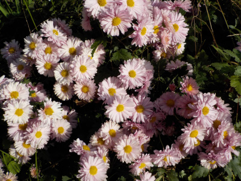
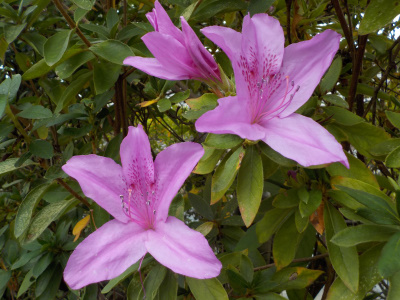
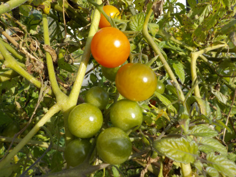
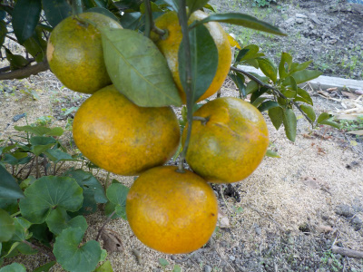
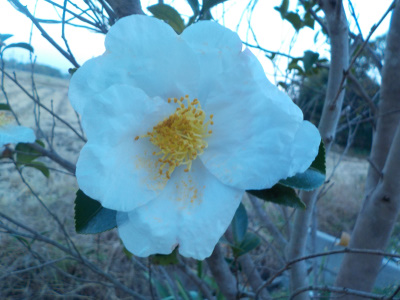
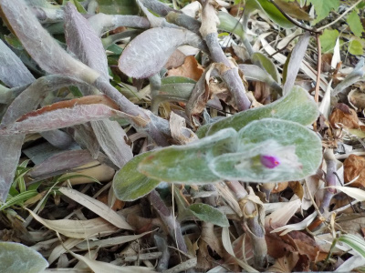
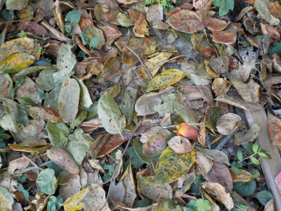

遊びで植物を育てよう
2018/11/25
夕顔の種を採りました。
今年は18個採れました。

来年は倍増させたいです。
【ページTOP】 【11月TOP】
【園芸TOP】
2018/11/18
寒くなりましたが、意外と花って多いですよね。
寒くなると草花は枯れるイメージがありますが、意外と花が多いです

菊の仲間は普通に咲く時期ですよね。
今年は暖冬なのでいまだに夏の花が咲いてたりするので、あちこちで花が咲いてます。
【ページTOP】 【11月TOP】
【園芸TOP】
2018/11/18
ツツジが綺麗に咲いています。
季節に関係なくよく咲きます。

たまたま気候が悪かっただけ？かもしれませんがよく咲くので、この株を増やそうかな。
来年暖かくなったら挿し木に挑戦しようと思います。
【ページTOP】 【11月TOP】
【園芸TOP】
2018/11/18
トマトをひとつ食べてみました。
オレンジ色の実のトマトを食べてみました。

味が薄かったです。
水っぽい。
もうトマトは終わったな。
【ページTOP】 【11月TOP】
【園芸TOP】
2018/11/10
みかんが美味しくなっていました。
もうそろそろ食べれるかな？と、試に食べてみました。

まだ薄めで、爽やかな甘さでした。すっぱくはなかったです。
もう好きなときに収穫して食べれそうです。
柿が食べ終わったら食べようと思います。
【ページTOP】 【11月TOP】
【園芸TOP】
2018/11/10
夕方のサザンカ
サザンカって綺麗なんですが、ベストの状態って少ないですよね。

この花はちょっとしおれた感じです。
ちょっと痛んだ状態の期間が長いので、近くで見るとそんなに綺麗じゃなかったりします。
【ページTOP】 【11月TOP】
【園芸TOP】
2018/11/10
トラデスカンチアって名前は覚えれない。
以前に名前が分からない植物があったんですが、ホームセンターで同じものを見つけたので名前が分かりました。

トラデスカンチアです。
覚えにくい名前ですね。
すぐに忘れそうです。
【ページTOP】 【11月TOP】
【園芸TOP】
2018/11/10
枯葉大量です。
柿の葉がすっかり落ちました。

枯葉の絨毯です。
これから寒くなりそうですね。
【ページTOP】 【11月TOP】
【園芸TOP】
過去の日記
【2017年11月の日記】
【2016年11月の日記】
【2015年11月の日記】
【2014年11月の日記】
【2013年11月の日記】
【2012年11月の日記】
【ページTOP】
【11月TOP】
【園芸TOP】
畑仕事じゃないよ。
【おいしいものを食べよう。】【たくさん寝よう。】
【ソロ活をしよう!】【季節感のあることをしよう。】【動画視聴はほどほどに。】【当サイトの全てのコンテンツは無断転載禁止です。】